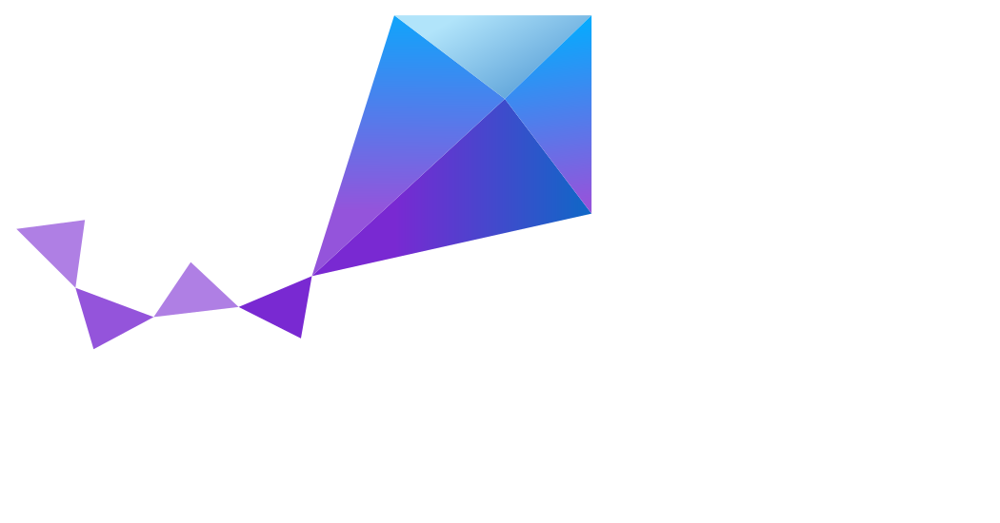

Built-in search
Google search
Kapa AI search
Zephyr Project
v: latest
Document Release Versions
latest
4.4.0
4.3.0
3.7.0 (LTS)
Downloads
PDF
zephyrproject.org Links
Project Home
SDK
Releases
Introduction
Developing with Zephyr
Kernel
Services
Build and Configuration Systems
Hardware Support
Contributing to Zephyr
Project and Governance
Security
Safety
Samples and Demos
Supported Boards and Shields
01space
96Boards
Aconno
Project ACRN
Actinius
Adafruit Industries LLC
Analog Devices, Inc.
Aesc Silicon
Ai-Thinker Co.
Alientek
Alif Semiconductor
Ambiq
Advanced Micro Devices (AMD), Inc.
Andes Technology
Antmicro
Arduino
ARM Ltd.
Armfly
ASPEED Technology Inc.
Atmark Techno
Atmel Corporation
Barth Elektronik GmbH
BBC
Blue Clover Devices
BeagleBoard.org Foundation
Bouffalo Lab Intelligent Technology (Nanjing) Co., Ltd.
BlackBerry
BLIIoT Technology Co., Ltd.
Blues
Broadcom Corporation
bytesatwork
CAN-Module
C-DAC (Centre for Development of Advanced Computing)
Cadence Design Systems Inc.
Circuit Dojo
Cirrus Logic, Inc.
Contextual Electronics
Core Devices LLC
Croxel
CTHINGS.CO
Cypress
Cytron
DFRobot
DH electronics
Digilent, Inc.
Doctors of Intelligence & Technology
DPTechnics
Dragino
Chengdu Ebyte Electronic Technology
Efinix, Inc.
Egis Technology Inc.
Elan Microelectronics Corp.
Electronut Labs
Element 14
Guangdong Embedsky Technology Co., Ltd
emtrion GmbH
ENE
EnjoyDigital
Espressif
Eurovibes
Ezurio
Fanke
Firefly
FlySky
FoBE Studio
Framework Computer Inc
Franzininho
FYSETC
Gaisler
GARDENA GmbH
GigaDevice Semiconductor
Google, Inc.
HardKernel
Heimann Sensor
Heltec
Shenzhen Holyiot Technology Co.
IAR
Infineon Technologies
innblue
Intel Corporation
ITE Tech. Inc.
Jhoinrch
Shenzhen JLC Technology Group Co., Ltd.
KAGA-FEI
Khadas
Kincony
Kosagi
KWS Computersysteme Gmbh
Lilygo
Longan Labs
lowRISC
Luatos
Shenzhen Luckfox Technology Co., Ltd.
M5Stack
Mad Machine
Makerbase
Maker Diary
Makerfabs
MediaTek Inc.
Microchip Technology Inc.
MikroElektronika d.o.o.
Muselab
MXCHIP
AZ3166 MXChip IoT DevKit
POSIX/Native Boards
Nordic Semiconductor
Norik Systems
NUCODE Co., Ltd.
Nuvoton Technology Corporation
NXP Semiconductors
Octavo
OLIMEX Ltd.
OpenHW Group
OpenISA
Other and unknown vendors
Panasonic Corporation
Particle Industries
PCB Cupid
Peregrine
PHYTEC
Pimoroni Ltd.
Pine64
PJRC
Qualcomm Technologies, Inc.
QEMU
Qorvo, Inc.
QuickLogic Corp.
Radxa
RAKwireless
Raspberry Pi Foundation
Raytac Corporation
Realtek
Renesas Electronics Corporation
Renode
Retronix Technology Inc
Ronoth
Ruiside
Ruuvi
Space Cubics
Seagate Technology PLC
SECO SpA
Seeed Technology Co., Ltd
SEGGER Microcontroller GmbH
Sensry
SHAKTI
Shields
SiFive
SiFli Technologies
Silicon Labs
Sipeed
Synopsys
Soldered Electronics
SparkFun Electronics
STMicroelectronics
StarFive
SteelSeries
Synaptics
T3 Gemstone
TDK
TECHNEXION
Telink Semiconductor
Third Reality, Inc.
Texas Instruments
Toradex
Trenz Electronic
Tuya
u-blox
UDOO
Umeta & Ikki Automotive Parts
UP Bridge the Gap.
Variscite
VCC-GND
Vicharak
VIEWE Display Co., Ltd.
VNG Corporation
Dongguan Waiken-Smart Technology Co., Ltd.
Waveshare Electronics
WCH - Nanjing Qinheng Microelectronics Co.
Würth Elektronik
WeAct Studio
Wemos
Witte
WIZnet
Xen Hypervisor
Shenzhen Xunlong Software Co., Limited
Releases
Reference
API
Kconfig Options
Devicetree Bindings
CMake modules
West Projects
Glossary
Zephyr Project
Docs / Latest
»
Supported Boards and Shields
»
MXCHIP
Open on GitHub
Report an issue with this page
MXCHIP
AZ3166 MXChip IoT DevKit